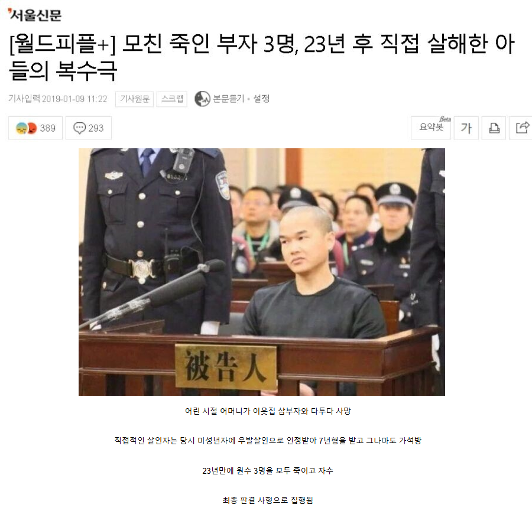
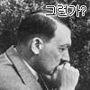

무로써 협을 행하라

무로써 협을 행하라
옳고 그름을 따지기 이전에 저 사람에게 후회는 없었을 거 같음
진정한 협이네
허나 굴하지 않고 도망치지 않아서 불굴. 이어지는 곳은 다시 절망, 좌절 공포, 후회, 책임, 분노, 회한, 슬픔,
또
의와 도리라.
무릎을 낮추고
다리에 힘을 주고
주먹을 쥐고
눈을 부릅뜨고
이를 악물고
한 걸음을, 크게 앞으로.

모친이 살해당하고 가석방된 세계에 무슨 미련이 있겠나
협객
저 정도 근성이면 뭐가되든 될 인재인데 사형내린척 하고 나라에서 써야됌
이거 차남이 죽였는데 막내가 미성년자라 형적게나오니 막내가 벌 대신받은거였음
근데 복수할때 차남새끼만 쏙빠져버림
차남이 좀 쎗나보네
딴데가있었대ㅋㅋ
강약약강은 비겁이 아니라 생존기술이다
저 사람 군인이었던가 그랬을건데 특수부대
누가 저 사람을 비난할 수 있겠는가